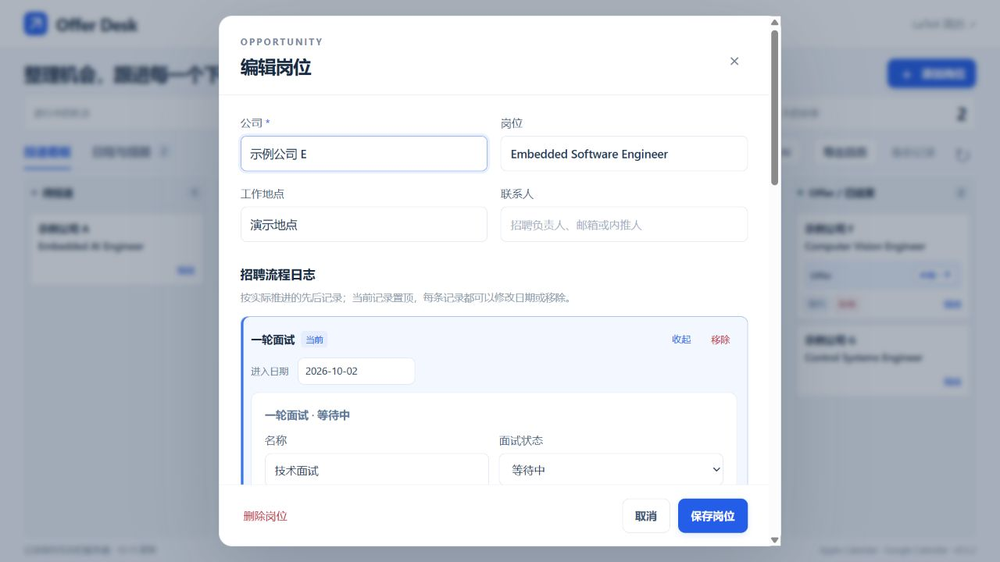
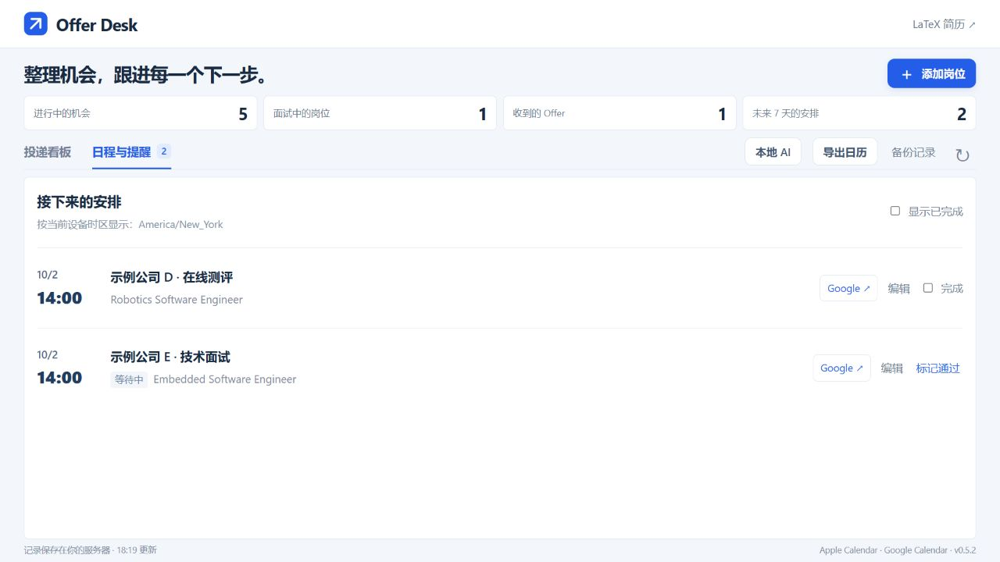

Application workflows
Drag cards between application stages, record interview rounds, and keep offer links and PDFs attached to the relevant role. Timeline entries reflect actual changes rather than filling in skipped stages.
04 / SWE · Embedded AI
An ongoing personal project within Sudow Workbench: a local application-tracking system that connects a web interface, persistent records, and small language models on an edge device.
In use
Screenshots from the running application with fictional companies, roles, and schedules. Select an image to open the full-size view.

The kanban board shows saved roles, applications, assessments, interviews, and outcomes, alongside summary counts.

Edit role information and interview rounds from one record, with a chronological workflow history.

An agenda brings interviews and assessments together, with calendar export and completion controls.
The problem
Job descriptions, email updates, interview schedules, and resume versions become scattered quickly. Offer Desk brings them into one local workspace, with an editable history for each application.
Drag cards between application stages, record interview rounds, and keep offer links and PDFs attached to the relevant role. Timeline entries reflect actual changes rather than filling in skipped stages.
The companion Paper Desk edits and compiles LaTeX resumes. Saved PDF versions can be associated with applications and used in job-description analysis.
System design
The application backend uses Python's standard library and SQLite. Linux user services run the workbench on Orange Pi; a local llama.cpp runtime provides optional AI assistance.
A kanban board, role details, interview schedules, and PDF document views.
Persistent application records, documents, AI tasks, and confirmation history.
Serial inference jobs continue after the browser closes, with cancellation and recoverable task state.
GGUF models run through llama.cpp. Model selection, memory use, and generation time are part of the deployment work.
AI workflow
Pasted email text is analyzed for application-stage updates. The interface shows supporting source text; selected suggestions update the application only after user confirmation.
Compare a job description with a selected resume PDF and present relevant text evidence. The matching interface is being refined as part of ongoing development.
Engineering focus
State management, persistent task processing, document storage, backup and rollback, and a browser interface for daily workflows.
Deploying quantized models on an ARM Linux device and testing the tradeoffs between memory use, inference latency, and output quality. AI assistance remains under evaluation and requires human review.
Status: ongoing personal project. This page describes the system without displaying personal application records, emails, or resume documents.